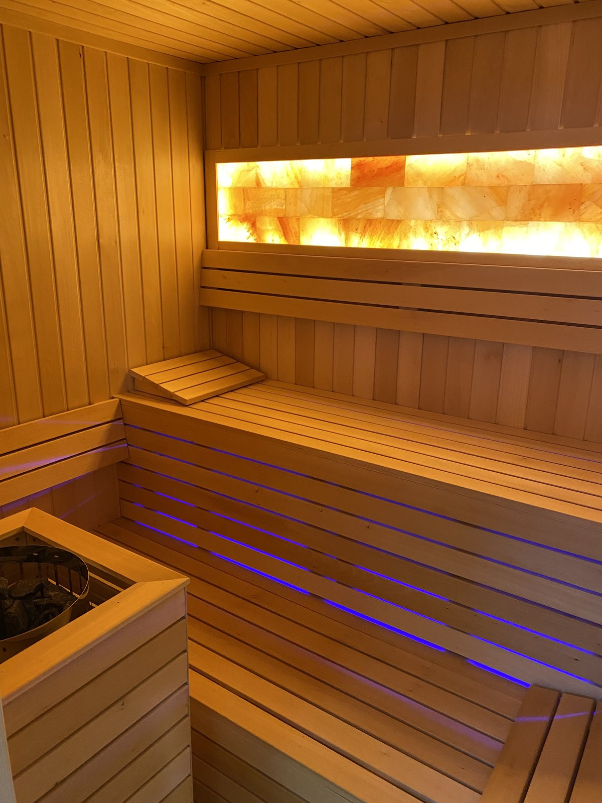
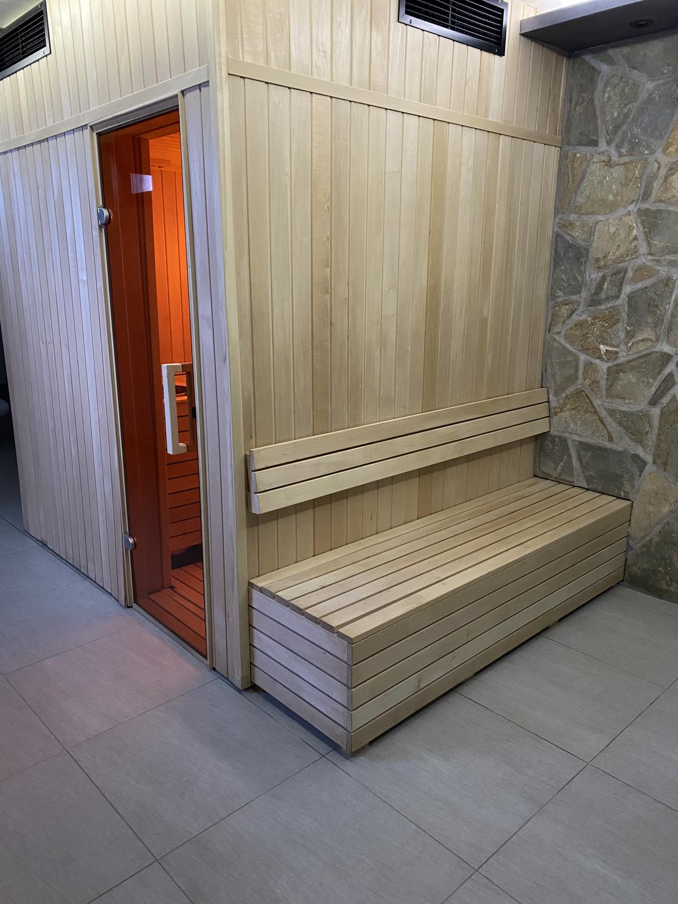
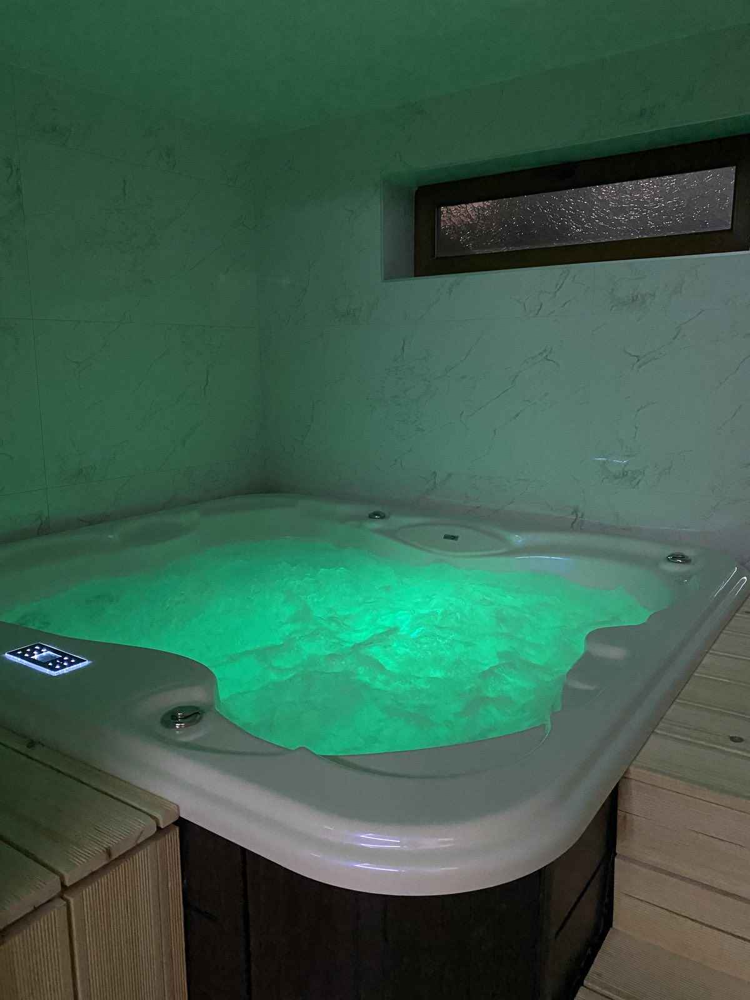
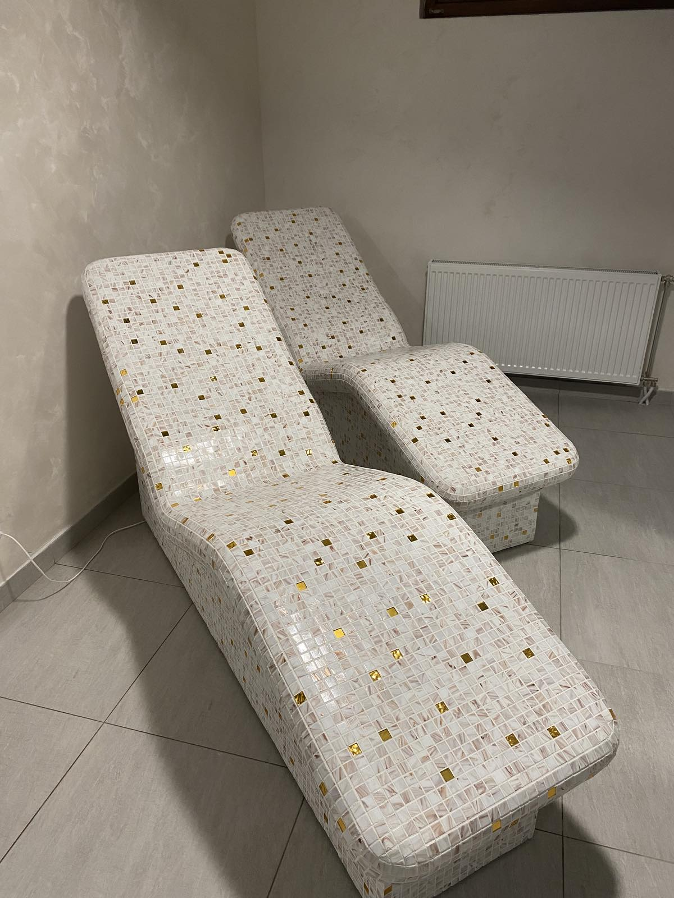
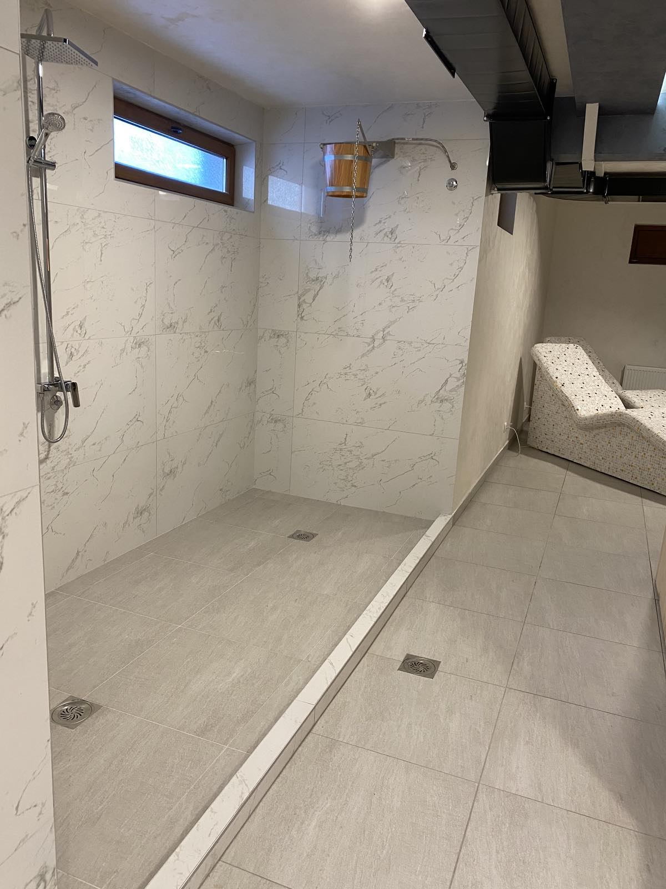
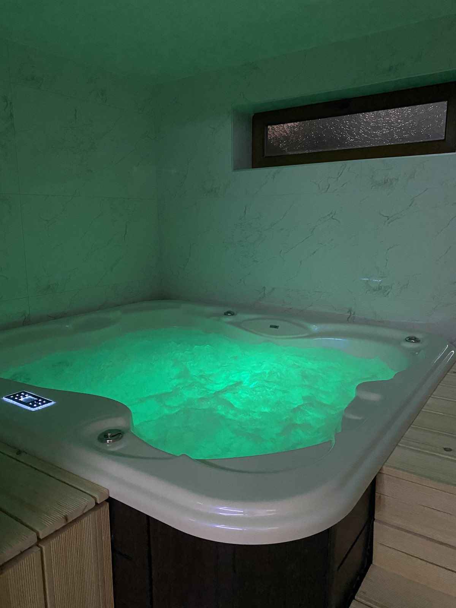
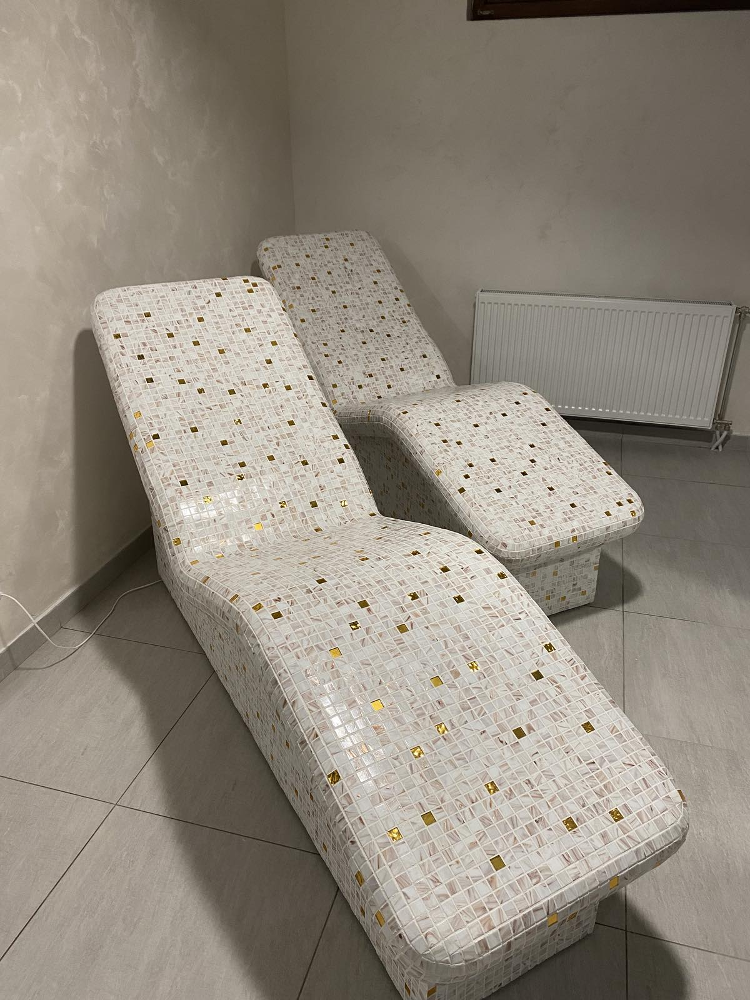
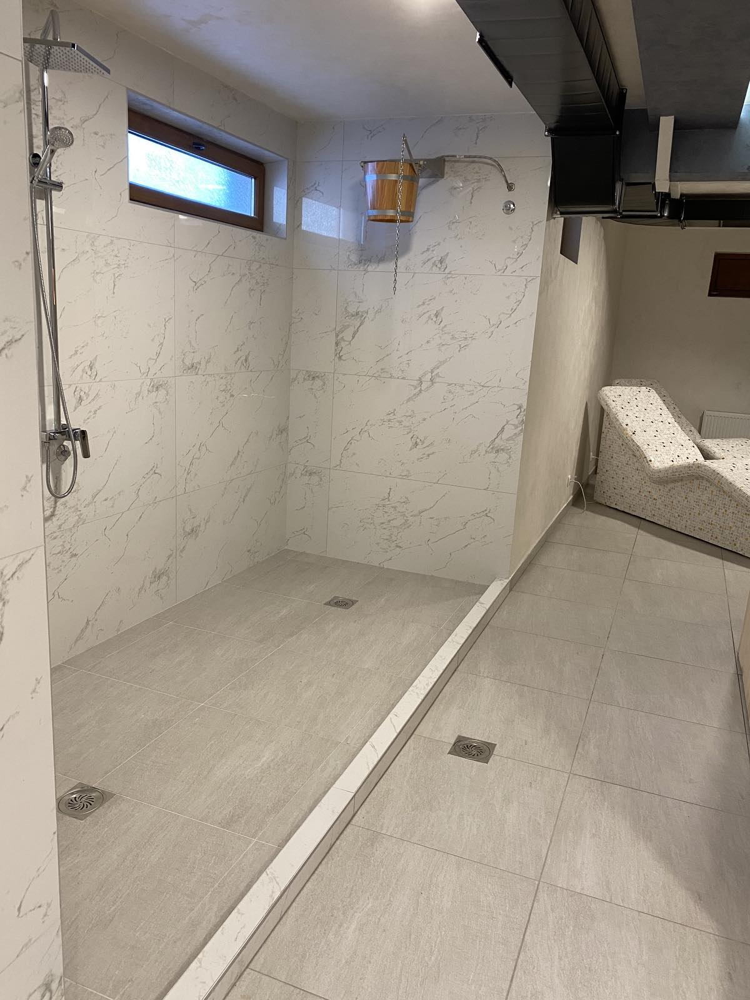

Dobrodošli u Apartman HILL22
Apartman na Zlatiboru za 2 do 4 osobe. Smeštaj u prijatnom ambijentu, uz moderan dizajn naših apartmana učiniće Vaš boravak na Zlatiboru nezaboravnim.
Pored apartmana nudimo Vam i spa centar koji se nalazi u samoj zgradi. Spa centar sadrzi đakuzi, saunu, parno kupatilo i tapidarijum. U blizini apartmana je pešačka staza koja vodi do prelepog restorana koji pored ukusnog jela nudi i prelep pogled na prirodne lepote Zlatibora. Restoran se nalazi na samom vidikovcu sa kojeg se pruža divan pogled na Zlatiborska brda. Centar se nalazi na oko 600m udaljenosti od apartmana.
Galerija
Spa centar
  




